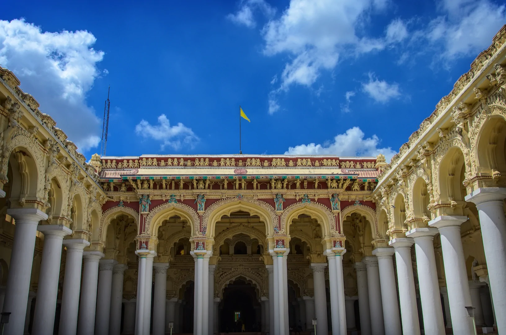
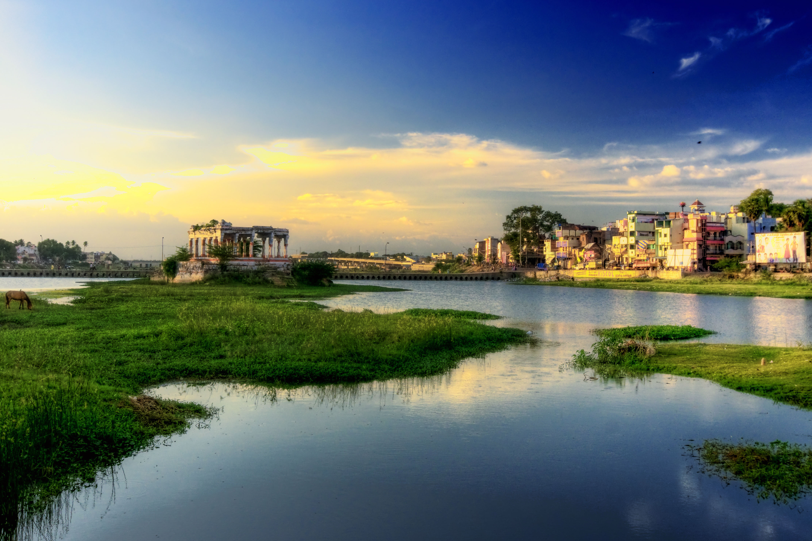
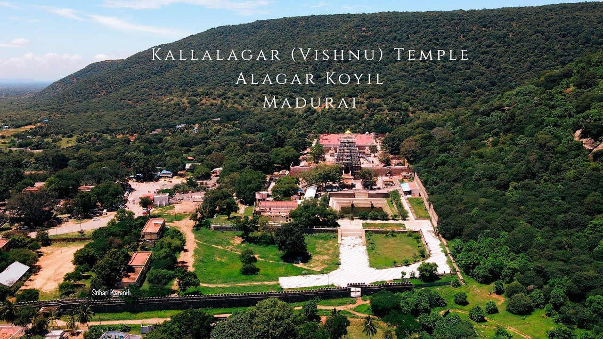
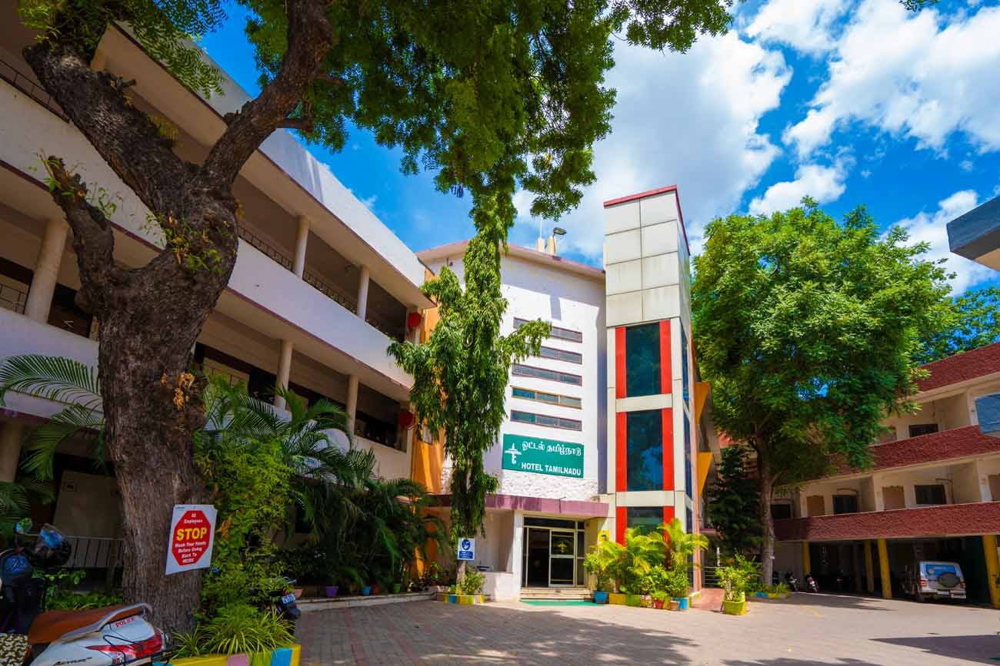
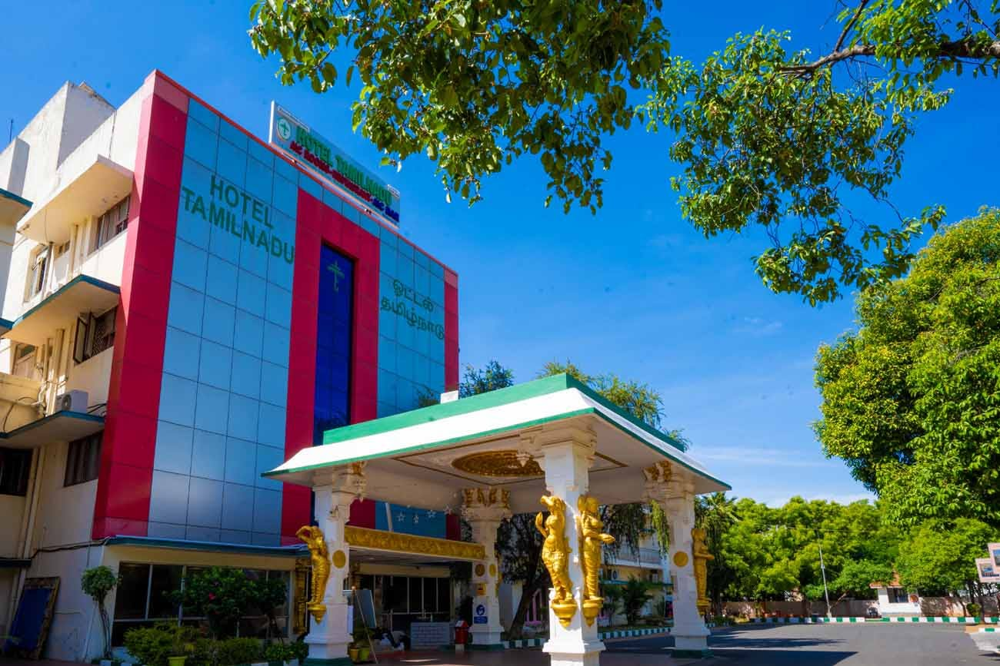

Madurai, also known as the "Athens of the East," is a vibrant city located in the Indian state of Tamil Nadu. It is steeped in history and culture, renowned for its magnificent temples, traditional art forms, and rich heritage.
The city's centerpiece is the Meenakshi Amman Temple, a grand Hindu temple dedicated to Goddess Meenakshi and Lord Sundareswarar. It is famous for its towering gopurams (entrance towers), intricately carved sculptures, and colorful architecture. The temple attracts devotees and tourists from around the world.
Thirumalai Nayakkar Mahal, an architectural marvel built in the 17th century, showcases a fusion of Dravidian and Islamic styles. It features stunning pillars, ornate arches, and a majestic courtyard. The palace hosts a sound and light show that narrates its glorious history.
The Vaigai River flows through Madurai, adding natural beauty to the city. Along its banks, you can enjoy serene walks and peaceful moments. The river is an integral part of Madurai's history and culture.
Alagar Koyil, also known as Alagar Kovil or Azhagar Kovil, is a picturesque temple situated in the Alagar Hills near Madurai. It is dedicated to Lord Vishnu and offers breathtaking views of the surrounding landscapes. The temple is particularly famous for the Chithirai Festival, a grand celebration held annually.
Accommodation Facilities
Hotel Tamilnadu - 1
Get enchanted by the amalgamation of elegance and sophistication at Hotel Tamilnadu Madurai Unit 1, located just a stone’s throw away from the famous Meenakshi Amman Temple. The hotel provides the perfect ambience to prepare oneself for an endless exploration of the art, heritage and exuberance of this temple town once ruled by the mighty Pandya kings.
Accommodation Facilities
Hotel Tamilnadu - 2
Located at the city centre, Hotel Tamilnadu Madurai Unit 2 boasts of convenience, comfort and class. The prime location of the hotel offers the business traveller an opportunity to enjoy the grandiose of the events organized frequently at Tamukkam Ground.
In addition to its cultural and historical significance, Madurai offers a variety of accommodation options to suit every traveler's needs. Whether you prefer luxury hotels, budget-friendly guesthouses, or homestays, you'll find plenty of choices to make your stay in Madurai enjoyable and memorable.